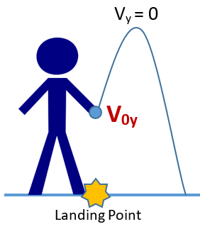

The math I employed in my Coriolis article is quite thorny and involved, so I decided to create a separate article to explain it. Despite the length of this math, the events that would take place still follow the rules of basic physics and kinematics.
As we saw in my article, "The Coriolis Effect: Why Space Life with Artificial Gravity Would Be Weird," I created a virtual coin toss on a space station. My JavaScript model solved for the exact location where a coin would land if someone were to throw it while standing in artificial gravity.
To understand the events that take place in our coin toss, we must look at these events from a perspective that is not rotating. The Coriolis effect is not a force, but is simply described by the difference between rotation and real gravity.
I assumed that the station is rotating clockwise. The math might have been slightly simpler if I had chosen counterclockwise instead, but this is how I imagined it. The station is a virtual coordinate system, where (0,0) is the exact center of the station. For our convenience, the moment of the throw takes place at the instant the person is standing at the bottom of the curve. The person throws the coin with the force that would have been needed to get it 3 feet up in the air on Earth.

While we are still holding the coin, we (and the coin) have a leftwards velocity due to the clockwise rotation. The centripetal force is pushing us upwards, directly towards the middle of the station.

At the moment the coin is released, it will no longer have any forces acting on it. The coin is no longer touching the station. It will continue to have the same leftwards horizontal velocity, but it will now have a vertical velocity component defined by how hard you would have thrown it on earth.
Now that I have set up the physics, I will explain the order of operations for our quest. In my advanced physics classes, the professors emphasized creating an equation that can solve your problem for you. This problem is far too complex to be placed into one equation; thus, we will solve it in steps, and the computer will give us the answer.
We are solving for the separation distance from where the coin landed and where we are standing at that moment. To find this, we need to find out the coordinates of where both we, and the coin, would end up. We know the velocity of the coin when it launches (or can solve for it easily). Using this, we can solve for its landing coordinate and the time it elapsed in the air. We can then use the time elapsed in the air to find where we would end up in an equivalent time period. This will give us our answer.
To review:
- Solve for the coin's starting velocity
- Both horizontal and vertical components
- Find the coin's landing coordinates
- Get the time elapsed
- Calculate the arc swept by you in this time period
- Use this to get your final coordinates
- Calculate the difference between the final coordinates
Starting Velocity
Vertical Component
The velocity of your throw is based on how hard you would have thrown the coin on Earth. This is the easy part of our quest; it's basic kinematics, and it uses Earth's gravity.

Physics tells us, that at the top of an arc of motion on earth, the velocity will exactly equal zero.
In the image on the right, I expanded the path so you can better see the vertical throw; however, the coin still falls directly under where it was thrown.
This is the relevant kinematics fomula:
Variables:
- \(v_f\) is the final velocity
- \(v_0\) is the initial velocty
- \(a\) is the acceleration
- \(x\) is the distance traveled
In our formula:
- \(v_0\) is the initial velocity, the variable we want
- \(v_f=0\) (the top of our throwing arc)
- \(x\) is the height of our throw (3 feet up)
- \(a=-g_e=-32.174\) ft/s/s, the gravity on earth.
By solving, we get:$$0=v_0^2-2gx$$
Horizontal Component
Before we solve for the coin's initial horizontal velocity, please note that the coin does not feel the same force of gravity as you do on the floor of the station. It has a smaller radius to the center of the station because you are holding it in your hand. Thus, the coin's horizontal velocity would not be quite the same as if it were touching the floor.
This is the equation of interest for us here, the equation for rotational acceleration:
Variables:
- \(v_t\) is the tangential velocity of an object on the station
- r is the radius where the object is located
- a is the acceleration felt by the object
- \(\omega\) is the rotational rate of the station in radians/second.
\(\omega\) would be the same at the floor and at the coin. We can calculate \(\omega\) using values at the floor (1g acceleration), and then use \(\omega\) to find the tangential/horizontal velocity of the coin.
In our formula:
- \(a=-32.174\) ft/s/s, the acceleration at the floor
- \(r\) is the radius of the station.
We can then use omega to calculate the tangential velocity of the coin at its radius. Using the formula at the top, we get:
The coin is thrown from \(\frac {2}{3}\) the height of the person. The velocity is set to be negative, because the coin is going left in our coordinate plane. Left is a negative direction.
Thus, our final formula:
Our variables:
- a = the acceleration of the station, -32.174 ft/s/s
- \(r_{station}\)=the radius of the station
- \(h_{person}\)=the height of the person
The Coin's Landing Coordinates
We can use the velocity components of the coin to find its landing coordinates. The coin is traveling up and to the left in a straight line; the slope of the path it follows is the fraction of the two velocity components, \(\frac{v_y}{v_x}\).
The equation for a line: \(y = mx + b\)
Our variables:
- \(m=\frac {rise}{run}=\frac{v_y}{v_x}\), it will be negative.
- \(b=\) the y-intercept \(=-(r_{station}-\frac {2}{3}*h_{person})\)
My computer tells me that \(v_x=-23.82329\) ft/s, and \(v_y=13.80403\) ft/s. This is the formula for the path of the coin:
Now, we need to find where this line intersects with a circle. Here is the formula for a circle:
We can cheat and solve this using an online graphing website:

In this image, you can see the path of the coin and its final intersection with the ground, up and to the left. The coin starts at the y-intercept.
Now, we will solve this by hand. For our computer model, we need formulas that the computer can solve!
Rearrange and simplify to a quadratic equation (format \(0=ax^2+bx+c\)):
The quadratic formula:
Plug in our variables and simplify:
This is our formula for the x-coordinate of the coin. The correct value will be the answer that is negative, because the coin goes to the left. The equation correctly gives us -23.967 when we solve with the (+) operator.
Now we need to solve for the y-component that matches this x-component:
This gives us 7.113. There is one problem: solving this way only gives us the absolute value of the y-component!
To get the correct sign of the y-component, we need to use the quadratic formula again.
Rearrange and simplify to a quadratic equation:
Put into the quadratic formula and simplify:
We already know the absolute value of the y-component. The quadratic formula tells us that this number should be negative, -7.113. We arrived at this number using the (-) operator.
Our final coordinates are (-23.967, -7.113). This matches the values from the graphing website.
The correct operators in the quadratic formula were (+) when solving for x, and (-) when solving for y. Thus, our final formulas are:
Our variables:
- \(m=\frac {v_y}{v_x}\). \(v_x\) is negative because the coin is moving left.
- \(r_{coin}\) is the radius at the coin.
- \(r_{station}\) is the radius of the station.
Time Elapsed in the Air
Now that we have the landing coordinates, we can solve for the exact time elapsed using kinematics equations. First, we need the distance traveled. We will calculate this using the Pythagorean Theorem. The final coordinates of the coin are (x_f, y_f), and the initial coordinates are (0,\(-r_{coin}\)).
Pythagorean theorem: \(d=\sqrt{(x_2-x_1)^2 + (y_2-y_1)^2}\).
Using our variables: \(d=\sqrt{x_f^2+(y_f+r_{coin})^2}\)
We also need to solve for the velocity. We have the x and y components. The velocity, with the Pythagorean theorem, is \(v=\sqrt {v_x^2 + v_y^2}\).
We know from basic kinematics that \(d=vt\) for objects that are not accelerating. We can rearrange this and plug in our values. We get:
Our variables:
- \(x_f\) = the final x-coordinate of the coin
- \(y_f\) = the final y-coordinate of the coin
- \(v_x\) = the velocity x-component
- \(v_y\) = the velocity y-component
- \(r_{coin}\) = the radius at the coin, before it is launched
The Arc Swept By the Person
We can use the time variable to calculate the angle a person will cover while the coin is in the air. This will give us the final coordinates of the person.
We have already calculated the station's rotation rate in the beginning of our problem. This is \(\omega\), in radians/second.
The person starts at an angle of \(\frac{3\pi}{2}\) (270 degrees). The person is sweeping a negative arc, because they are traveling clockwise (counterclockwise is positive for angles).
If \(\theta_t\) is the total arc swept by the person, then you would expect \(\theta_t=\theta_f-\theta_0\). However, you must keep in mind the negative direction of the arc being traveled. We can switch the sign by flipping the terms of the equation. Thus, our formula is \(\theta_t=\theta_0-\theta_f\), where \(\theta_0=\frac{3\pi}{2}\). Now rearrange the terms:
With rotational kinematics, we can calculate the arc swept by the person:
Put the equations together:
We have just calculated the person's final angle in the station. Now, we have a set of polar coordinates: we have the final angle and the radius. We can convert these polar coordinates to cartesian coordinates using the equations:
Our final x and y coordinates:
Our variables:
- r = the radius of the station
- \(\omega\) = the rotational rate of the station (calculated when we found the horizontal velocity)
- t = the time elapsed while the coin is in the air
The Final Answer
Now that we have the landing coordinates of the coin, and the person's final coordinates, we can calculate the straight line distance between the two using the Pythagorean theorem. This formula gives us our answer:
Javascript calculates to a precision of about 15 decimal points.
Max Height Achieved
My table also displays the max height achieved by the coin. Unfortunately, there is no formula to calculate this. I generated this number by creating a maximization script; the script sweeps up and down the path of the coin to find the point that is at the farthest distance from the circle.
Final Notes
I would quickly like to note my experience with physics. I do not have a physics degree, but I have studied physics-mechanics three times in school. I was successful each time.
I originally studied physics as a high school student, and I was fascinated by it! I decided to take it again in high school as an AP course; I earned a 4/5 on the final AP exam.
In college, I ended up taking this course a third time, even though I already had college credit for it. This class was a prerequisite for medical school, and medical schools do not accept AP credit. The equivalent course at BYU was "Principles of Physics I, for Scientists and Engineers." I earned an A.
In none of these classes was the Coriolis effect ever mentioned. I was never given a physics problem similar to this one. It seems it would be far too complicated for an exam. I cannot remember where I originally read about the Coriolis effect. This subject is something that has fascinated me for years.